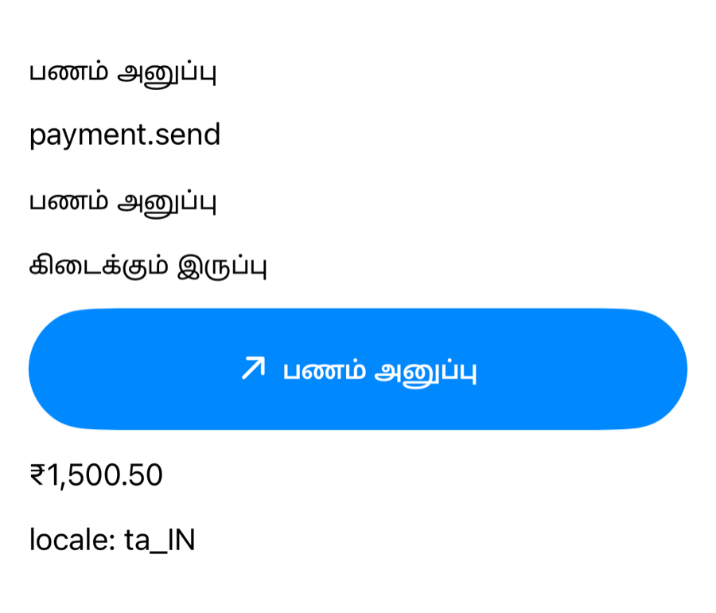
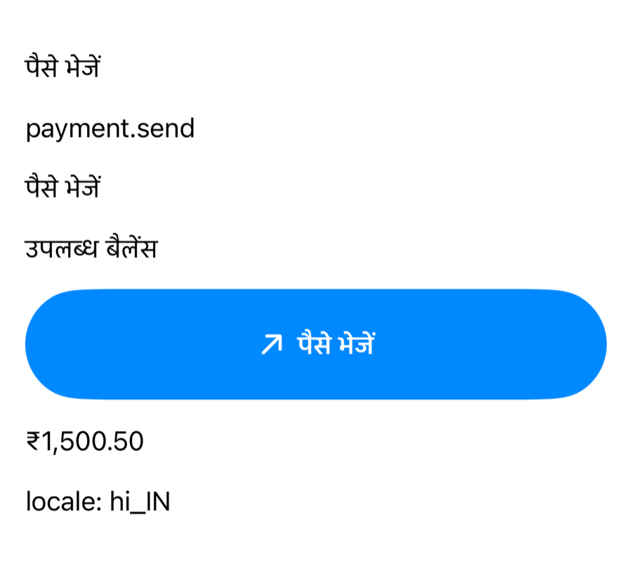

Unit 03 · Lesson 3.10
Accessibility &
Localization
The same NPay screen in English, Tamil and Hindi, mirrored for right-to-left, and read aloud meaningfully. The money never changes.
Lesson 3.10 · Outcomes
By the end, you will be able to explain
Explain how a localized string is resolved, and when it isn’t
Format money by locale without changing its value
Build layouts that survive right-to-left
Give VoiceOver meaning, not layout
Add stable accessibility identifiers for UI tests
Inspect an app’s accessibility, element by element
Lesson 3.10 · Where we are
Today: every user, every language
Unit 03 · Advanced SwiftUI & Navigation
Part 1
Localization at runtime
One screen, three languages
Part 1 · NPay in three languages (section 15)
Same structure; different words, different lengths

-AppleLanguages (en)

(ta): Tamil

(hi): Hindi
- The screen’s structure is unchanged
- Labels change length: layout must adapt (3.8)
Localizable.xcstringscompiled into the app- Launched with
-AppleLanguages,-AppleLocale
Part 1 · How localization is resolved (section 16)
A literal is a key; a String is just text
Text("payment.send") // literal: a LocalizedStringKey
let title: String = "payment.send"
Text(title) // a String: shown as is
Text(LocalizedStringKey(title)) // explicitly a key| Line | en | ta |
|---|---|---|
| literal | Send Money | பணம் அனுப்பு |
Text(title) | payment.send | payment.send |
| explicit key | Send Money | பணம் அனுப்பு |
Accessibility labels read from the simulator.
Part 2
Money and locale
Same amount, local conventions
Part 2 · Locale-aware currency formatting (section 17)
Always INR; the locale decides the look
let amount = Decimal(150050) / Decimal(100)
let india = amount.formatted(
.currency(code: "INR")
.locale(Locale(identifier: "en_IN")))
let usa = amount.formatted(
.currency(code: "INR")
.locale(Locale(identifier: "en_US")))
print(india)
print(usa)₹1,500.50
₹1,500.50
| Locale | ₹1,500.50 | ₹12,345,678.50 |
|---|---|---|
| en_IN | ₹1,500.50 | ₹1,23,45,678.50 |
| en_US | ₹1,500.50 | ₹12,345,678.50 |
| ta_IN, hi_IN | ₹1,500.50 | |
| de_DE | 1.500,50 ₹ | |
| fr_FR | 1 500,50 ₹ | |
| ar_SA | ١٬٥٠٠٫٥٠ ₹ |
Authored additions to the run: more locales and a larger amount.
- Monetary value: paise in the domain
- Currency: INR
- Formatting locale: presentation
Part 2 · Why not build currency strings manually? (section 18)
Interpolation drops what formatting knows
Text("₹\(amount)") // avoid
Text(amount,
format: .currency(code: "INR")) // prefer"₹\(amount)": ₹1500.5 ₹12345678.5
formatted (en_IN): ₹1,500.50 ₹1,23,45,678.50
- Grouping: no separators at all
- Decimals: the trailing zero vanishes
- Symbol placement and separators by locale
- A clean spoken form for VoiceOver
- Amounts stay integer paise (2.12)
- Convert to a decimal only to format
Part 3
Right-to-left
Leading isn’t always left
Part 3 · Right-to-left layout (sections 19–20)
The same Home, mirrored

Left to right

Environment override

RTL pseudolanguage
default: leftToRight
pseudolanguage: rightToLeft
- Tabs, quick actions, row layout
.leadingtext moved to the right
arrow.up.rightstill points right- Directional symbols need checking
Part 3 · Leading and trailing; test RTL (sections 19–20)
Semantic alignment adapts; left and right don’t
.frame(maxWidth: .infinity, alignment: .leading) // adapts
#Preview("RTL") {
ContentView()
.environment(\.layoutDirection, .rightToLeft)
}- Start and end of the reading direction
- Prefer them to hardcoded left/right
- Finds layout assumptions fast
- Test the app in a supported RTL language
Part 4
Accessibility meets localization
Meaning, not arrangement
Part 4 · Accessibility and localization together (section 21)
Four fragments, or one meaningful element
TransactionRow(transaction: transaction)
.accessibilityElement(children: .ignore)
.accessibilityLabel(transaction.title)
.accessibilityValue(
Money.display(transaction.amountPaise)
)- Label: what; value: how much
- Both must be localized too
"arrow.up.right" [image]
"Sent to ravi@npay" [text]
"-₹1,500.50" [text]
"24 Oct" [text]
"Sent to ravi@npay" value "-₹1,500.50"
- Unlabelled SF Symbol: its name is spoken, “arrow.up.right”
Part 4 · Accessibility inspection (section 23)
Expected vs what NPay exposes
| Component | Expected | Measured (elements printed in the simulator) |
|---|---|---|
| BalanceCard | announces the balance meaningfully | 3 separate texts → one combined element (ours) |
| Send Money / quick actions | announces its action | “Send”, “Request”, “History” [button] |
| Payment TextField | has a meaningful label | empty label; placeholder “Recipient ID” as value |
| Transaction row | announces transaction details | “Coffee Shop” value “-₹250.00” |
| Success screen | not only animation | checkmark read as “Selected”; the text carries it |
| Tab bar | meaningful tab labels | Home, Payments, History, Profile [button, selected] |
- TextFields: a real label · the checkmark: a meaningful label, or hide it
Part 5
Built for every user
Localized titles, stable identifiers
Part 5 · A reusable accessible NPay action (section 22)
Translated title; identifier never spoken
struct NPayActionButton: View {
let title: LocalizedStringKey
let symbol: String
let accessibilityID: String
let action: () -> Void
var body: some View {
Button(action: action) {
Label(title, systemImage: symbol)
.font(.headline)
.frame(maxWidth: .infinity)
.padding()
}
.buttonStyle(.borderedProminent)
.accessibilityIdentifier(accessibilityID)
}
}
NPayActionButton(title: "payment.send",
symbol: "arrow.up.right",
accessibilityID: "npay.sendPayment") {
print("Send Money tapped")
}"பணம் அனுப்பு" [button] id npay.sendPayment
LocalizedStringKey- “payment.send” is looked up, not shown
- A
Stringparameter would show the key (Part 1)
accessibilityIdentifier- Stable, for UI automation
- Not spoken by VoiceOver
Part 5 · Identifiers for future UI tests (section 24)
One enum, used everywhere
enum NPayAccessibilityID {
static let balanceCard = "npay.balanceCard"
static let recipientField = "npay.recipientField"
static let amountField = "npay.amountField"
static let sendButton = "npay.sendButton"
static let transactionList = "npay.transactionList"
}
TextField("Recipient", text: $recipient)
.accessibilityIdentifier(NPayAccessibilityID.recipientField)Home: "Available Balance, ₹25,000.00, …" id npay.balanceCard
Payments: "" value "Recipient ID" id npay.recipientField
"" value "Amount (₹)" id npay.amountField
"Review Payment" [button] id npay.sendButton
History: id npay.transactionList
- One spelling, shared by the app and its tests
- Unit 9 writes the UI tests that use them
Part 6
NPay after Lesson 3.10
Accessible by default
Part 6 · NPay after Lesson 3.10 (integration, authored)
Five small changes
| File | Change |
|---|---|
| App/NPayAccessibilityID.swift | the section 24 enum |
| BalanceCard | .accessibilityElement(children: .combine) + identifier |
| TransactionRow | section 21: one element, label and value |
| PaymentsScreen | identifiers on both fields and Review Payment |
| HistoryScreen | identifier on the List |
- Field labels; the checkmark label
- Localizing the whole app: our catalog has three keys
- Twelve lessons: next 3.11 Performance, then 3.12 Integration & review
Lesson 3.10 · Recap
What to remember
Keys resolve; Strings don’t
literals and LocalizedStringKey are looked up
Locale formats, never changes, money
INR stays INR; paise stay paise
Meaning for every user
leading/trailing; one element per idea; stable identifiers
Review
Check your understanding
Check your understanding · 1 of 10
Does VoiceOver necessarily expose every SwiftUI layout container as a separate element?
Our Home exposed texts, buttons and combined elements, no stacks.
Common trap: Picturing the view tree as the accessibility tree.
Check your understanding · 2 of 10
What is the purpose of accessibilityIdentifier?
- Spoken VoiceOver label
- Stable programmatic identification
- Currency formatting
npay.sendPayment stayed the same in Tamil; the label changed.
Common trap: Using identifiers as labels.
Check your understanding · 3 of 10
Should changing NPay’s language change its underlying monetary values?
₹1,500.50 in every locale we tried; only the format differs.
Common trap: Converting currency with the language.
Check your understanding · 4 of 10
Why prefer .leading and .trailing alignment?
- They are always faster
- They disable localization
- They adapt to semantic layout direction
Our Home mirrored correctly under the RTL pseudolanguage.
Common trap: Hardcoding left and right.
Check your understanding · 5 of 10
Is a LocalizedStringKey equivalent to every ordinary String?
Text(title) with a String showed “payment.send”.
Common trap: Assuming every string is looked up.
Check your understanding · 6 of 10
Should payment success rely only on a green animated checkmark?
VoiceOver read the checkmark as “Selected”; the text carried the meaning.
Common trap: Communicating with colour and motion alone.
Check your understanding · 7 of 10
let title: String = "payment.send", then Text(title), with the app in Tamil and a Tamil translation in the catalog. What appears?
- பணம் அனுப்பு
- payment.send
- Send Money
A String uses the verbatim initializer; wrap it in LocalizedStringKey.
Common trap: Expecting variables to be localized.
Check your understanding · 8 of 10
With no label of your own, how did VoiceOver get NPay’s success checkmark?
- “Payment successful”
- “Selected”
- Nothing
The symbol’s built-in meaning, not ours: label it or hide it.
Common trap: Trusting icons to speak for themselves.
Check your understanding · 9 of 10
.currency(code: "INR") in the en_IN locale formats 12,345,678.50 as…
- ₹12,345,678.50
- ₹1,23,45,678.50
- 12.345.678,50 ₹
Lakhs and crores; en_US gives A, de_DE gives C.
Common trap: Assuming one grouping style.
Check your understanding · 10 of 10
From Lesson 3.9: where does @Environment(\.layoutDirection) get its value?
- A global variable
- The view’s position in the hierarchy (its ancestors)
- The view’s initializer
Like colorScheme: the nearest ancestor’s value; the pseudolanguage set it at the root.
Common trap: Treating environment values as globals.
Lesson 3.10 · Where this goes next
Where this goes next
| Lesson | Topic | Builds on today |
|---|---|---|
| 3.11 | SwiftUI performance, lazy loading & profiling | LazyVStack, body evaluations, Instruments, NPay’s history |
| 3.12 | Unit 3 integration & architecture review | the complete app, reviewed |
| Unit 9 | Testing | UI tests that use NPayAccessibilityID |
Lesson 3.10 · Lab
Every user, every language
Localize a screen; mirror it; listen to it.
- Add a String Catalog with English and one more language.
- Compare
Text("key"),Text(title),LocalizedStringKey. - Format ₹12,345,678.50 in three locales.
- Run with the RTL pseudolanguage; find what didn’t mirror.
- Turn on VoiceOver; walk Home and Payments.
- Fix the field labels and the checkmark.
- Screenshots in two languages and RTL
- Your accessibility element list for Payments
- The two fixes, with before and after
Lesson 3.10 complete
Accessibility &
Localization
Next: Lesson 3.11 — SwiftUI Performance, Lazy Loading & Profiling